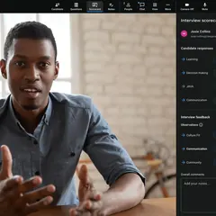
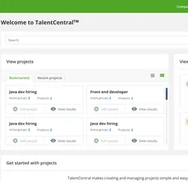
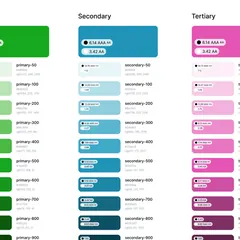
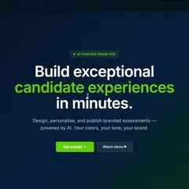
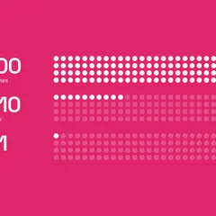

Hi, I'm PranviSenior UX Designer
Turning enterprise complexity into clarity, confidence, and action.
Designing enterprise products, decision-support tools, AI experiences, and scalable design systems for global teams.
Focus areas
- Enterprise UX
- AI-Assisted Experiences
- Design Systems
- Accessibility
- Data Visualization
Selected work
-

Interview ProfessionalA structured video-interview platform that makes hiring fair for candidates and insightful for interviewers, from field research to shipped analytics.
20,000+ candidates4,200+ hrs saved -

TalentCentral+ Project GroupsRecruiters kept creating duplicate projects for near-identical hiring drives. I reframed the problem from "more projects" to "reuse" and rebuilt the core workflow around it.
10× fewer duplicatesSystems thinking -

Talent Management Design SystemFive legacy products, each with its own UI, stitched into one hiring workflow. I owned the design system that replaced them: 55 components, built by five squads, documented to one standard.
2× deliveryCompany-wide -

Bob the BuilderA two-day AI hackathon at SHL. We turned a 4–7 week manual branding process into a conversation with an AI implementation consultant, with live preview and one-click publish.
Top 10 of 100 submissions0→1 in 2 days -

SoulMateWhy don't people who want relationships find them on dating apps? I found the answer wasn't more matches but less choice, and designed a concept that matches people on personality, with an AI proof of concept.
82% dissatisfied107-person survey
About
I make complex, data-heavy software feel obvious, the kind of tools people use all day and shouldn't have to think about.
At SHL I work across the Talent Intelligence platform: structured interviewing, talent profiles, data configuration, and the design system that holds it together. Most of my work lives in the messy middle of enterprise software, high volume, high stakes, and a lot of logic hiding under the surface.
I start from research and evidence, look for the systemic problem under the surface request, and defend design decisions with data rather than taste. I care about accessibility as a baseline, not a feature.
Before SHL I built and mentored a small design team, which taught me that the best design work is rarely a solo act, it's alignment, clarity, and getting a room to agree on the real problem.
- Certified
- W3C WAI Accessibility, Google UX Design